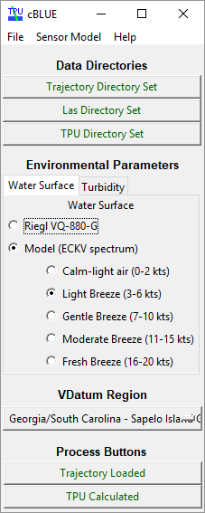

GUI¶
The cBLUE GUI consists on a single window, a simple menu bar and main section.
Data Directories¶
cBLUE requires three directories to be set:
| Directory | Description |
|---|---|
| Trajectory | contains the ASCII trajectory |
| LAS | contains the LAS files |
| Output | where the output files will be created |
Environmental Parameters¶
The subaqueous TPU calculations rely on characterizing two general environmental conditions: water-surface wave conditions and turbidity.
Water Surface¶
The user has two options to characterize the water-surface. Both options use pre-computed coefficient lookup tables generated using Monte Carlo simulations.
- Riegl VQ-880-G
This proof-of-concept option is currently limited in applicability. The lookup table used in this approach is generated from a water surface defined by a sampling of the first returns in a small area of the NOAA RSD Marcos Island project. Future development plans include deriving representative surface models for each flight line within each input tile.
- Model (ECKV spectrum)
The lookup table used in this option is generated using a version of the Elfouhaily et al. (ECKV) directional gravity-capillary wave spectrum model that characterizes the distribution of wave frequencies using estimates of wind speed.
ECKV Spectrum Options¶ options wind speed range (kts) Calm-light air 0-2 Light Breeze 3-6 Gentle Breeze 7-10 Moderate Breeze 11-15 Fresh Breeze 16-20
VDatum Region¶
The user has the option to select a VDatum region, to include the corresponding maximum cumulative uncertainty (MCU) in the final TPU calculations.